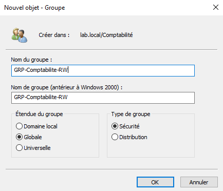
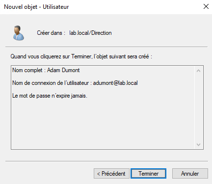
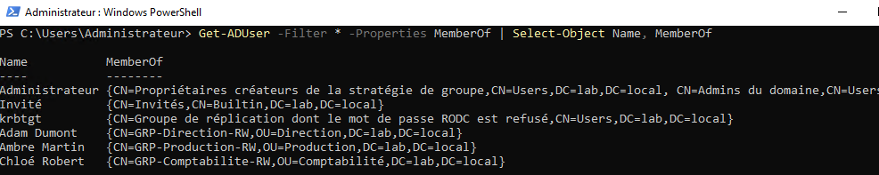

TP06 — Utilisateurs et groupes
Théorie : Cours - Active Directory
Captures :99-Captures/TP06/· Prérequis : TP05-Creation-OU
Objectif
Créer les comptes utilisateurs et les groupes de sécurité du laboratoire, en respectant le principe des moindres privilèges.
Contexte
Le laboratoire simule une PME. Les droits sont attribués via des groupes, jamais directement aux utilisateurs.
Groupes cibles
GRP-Direction-RW
GRP-Production-RW
GRP-Comptabilite-RW
Prérequis
- [v] TP05-Creation-OU validé
- [v] OU Direction, Production et Comptabilité créées
Étapes
1. Création des groupes
Créer les groupes de sécurité globaux dans les OU correspondantes.

2. Création des utilisateurs
Créer au minimum un utilisateur de test par OU.

3. Appartenance aux groupes
Affecter chaque utilisateur au groupe de son service.
Get-ADUser -Filter * -Properties MemberOf | Select-Object Name, MemberOf

Validation
- [v] Groupes de sécurité créés
- [v] Utilisateurs de test créés
- [v] Appartenances configurées via groupes
Progression
| Étape | Lien |
|---|---|
| Prérequis | TP05-Creation-OU |
| Suite recommandée | → TP07-Jonction-poste-client |
| Branches | Cours - PowerShell Scripts AD |
| Théorie | Cours - Active Directory |
Suivi : Progression